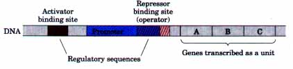
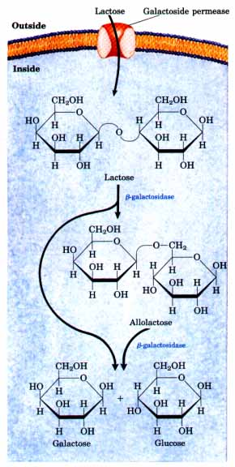
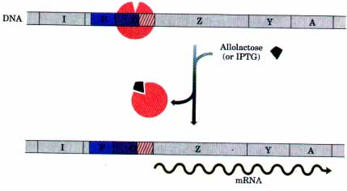
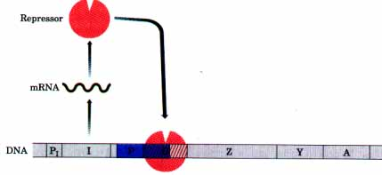
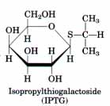
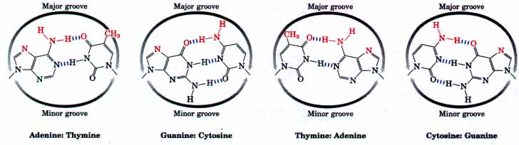
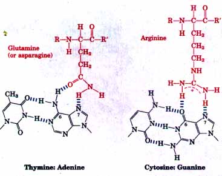
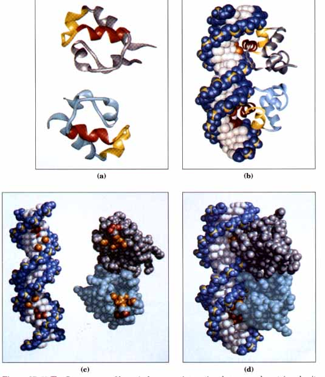
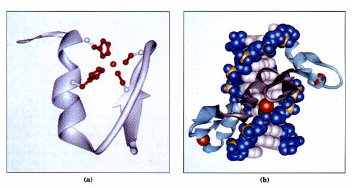
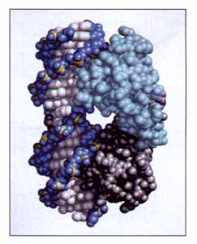

Bacteria have a simple general mechanism for coordinating the regulation of genes whose products are involved in related processes: the genes are clustered on the chromosome and transcribed together. Most prokaryotic mRNAs are polycistronic. The single promoter required to initiate transcription of the cluster is the point where expression of all of the genes is regulated. The gene cluster, the promoter, and additional sequences that function in regulation are together called an operon (Fig. 27-5). Operons that include 2 to 6 genes transcribed as a unit are common; some operons contain 20 or more genes. |
 Figure 27-5 An operon. Genes A, B, and C are transcribed on one polycistronic mRNA. Typical regulatory sequences include binding sites for proteins that either activate or repress transcription from the promoter. |
| Many of the principles guiding the regulation of gene expression in bacteria were defined by studies of the regulation of lactose metabolism in E. coli. The disaccharide lactose can be used as the sole carbon source for the growth of E. coli. In 1960, Fran~ois Jacob and Jacques Monod published a short paper in the Proceedings of the French Academy of Sciences demonstrating that two genes involved in lactose metabolism were coordinately regulated by a genetic element located adjacent to them. The genes were those for β-galactosidase, which cleaves lactose to galactose and glucose, and galactoside permease, which transports lactose into the cell (Fig. 27-6). The terms operon and operator were first introduced in this paper. The operon model that evolved from this and subsequent studies permitted biochemists to think about gene regulation in molecular terms for the first time. |  Figure 27-6 The activities of galactoside permease and β-galactosidase in lactose metabolism inE. coli. The conversion of lactose to allolactose by transglycosylation is a minor reaction catalyzed by β-galactosidase. |
 |
Figure 27-7 The Lac operon in the repressed state. The I gene encodes the Lac repressor. The lac Z, Y, and A genes encode β-galactosidase, galactoside permease, and transacetylase, respectively. The P and O sites are the promoter and operator for the lac genes, respectively. The P1 site is the promoter for the I gene. |
The model for regulation of the lactose (lac) operon deduced from these studies is shown in Figure 27-7; it follows the pattern outlined in Figure 27-4a. In addition to the genes for β-galactosidase (Z) and galactoside permease (Y), the operon includes a gene for thiogalactoside transacetylase (A), whose physiological function is unknown. Each of the three genes is preceded by translational signals (not shown in Fig. 27-7) to guide ribosome binding and protein synthesis (Chapter 26). In the absence of the substrate lactose, the lac operon genes are repressed, and β-galactosidase is present in only a few copies (a few molecules) per cell. Jacob and Monod found that mutations in the operator or in another gene called I led to constitutive synthesis of the lac operon gene products. When the I gene was defective, repression could be restored by introducing a functional I gene to the cell on another DNA molecule. This showed that the I gene encoded a diffusible molecule that caused gene repression; the molecule was later shown to be a protein, now called the Lac repressor. Repression is not absolute. Even in the repressed state each cell has a few copies of β-galactosidase and galactoside permease, presumably synthesized on therare occasions when the repressor briefly dissociates from its DNA binding site (the operator).
When cells are provided with lactose, the lac operon is induced. An inducer molecule binds to a specific site on the repressor causing a conformational change in the repressor that results in its dissociation from the operator (Fig. 27-8). The inducer in this system is not lactose itself but an isomer of lactose called allolactose (Fig. 27-6). Lactose entering the E. coli cell is converted to allolactose in a reaction catalyzed by the few copies of β-galactosidase in the cell. Allolactose then binds to the Lac repressor. After the repressor dissociates, the Lac operon genes are expressed and the concentration of β-galactosidase increases by a factor of 1,000.
 |
Figure 27-8 Induction of the lac operon in response to a molecular signal. Binding of allolactose to the Lac repressor causes a conformational change. The repressor dissociates from the operator, allowing transcription to proceed. Other β-galactosides, such as isopropylthiogalactoside (IPTG), can also act as inducers. |
Several β-galactosides structurally related to allolactose are inducers of, but not substrates for, β-galactosidase, and some are substrates but not inducers. One particularly effective and nonmetabolizable inducer of the lac operon often used experimentally is isopropylthiogalactoside (IPTG). Such nonmetabolized inducers permit the separation of the physiological function of lactose as a carbon source for growth from its function in the regulation of gene expression. Many operons are now known in bacteria and a few have been found in lower eukaryotes. The mechanisms by which they are regulated can vary significantly from the simple model presented in Figure 27-7. Research has shown that even the lac operon is more complex than indicated here, with an activator protein also contributing to the overall scheme. The regulation of several well-studied bacterial operons, including Lac, is described in more detail later in this chapter. We now consider the critical molecular interactions between DNA-binding proteins (e.g., repressors and activators) and the specific DNA sequences to which they bind. |
 Figure 27-9 Functional groups on DNA base pairs in the major groove of DNA. The groups that can be used for base-pair recognition are shown in red for all four base pairs. |
Regulatory proteins generally bind to specific DNA sequences. They also bind to nonspecific DNA, but their affinity for their target sequences is generally 105 to 107 times higher. The molecular basis for this discrimination has been the subject of intensive investigation. A general conclusion is that regulatory proteins usually have discrete DNA-binding domains. In addition, the substructures within these domains that actually come in contact with the DNA fall into one of a rather small group of recognizable and characteristic structural motifs.
Before examining these protein structures, it is useful to consider the recognition surfaces on the DNA with which regulatory proteins must interact. Most of the groups that differ from one base to another and can therefore permit discrimination between base pairs are hydrogen-bond donor and acceptor groups exposed in the major DNA groove (Fig. 27-9). Most of the protein-DNA contacts that impart specificity are therefore hydrogen bonds. One notable exception is a nonpolar surface near C-5 of pyrimidines, where thymine is readily distinguished from cytosine by virtue of thymine's protruding methyl group (Fig. 27-9). Protein-DNA contacts are also possible in the minor groove of the DNA, but the hydrogen-bonding patterns here generally do not allow ready discrimination between different base pairs.

As for the regulatory proteins themselves, the amino acid residues whose side chains are most often found hydrogen-bonded to bases in the DNA include Asn, Gln, Glu, Lys, and Arg. Is there a simple "recognition code" in which an amino acid is always paired with a certain base? The two hydrogen bonds that can form between Gln or Asn and the N6 and N-7 positions of adenine (Fig. 27-10) constitute a pattern that cannot form with any other base. An Arg residue can similarly form two hydrogen bonds to both N-7 and O6 of guanine (Fig. 27-10). However, examination of the structures of many DNA-binding proteins has shown that there are multiple ways for a protein to recognize each base pair, and no simple code exists. The Gln-adenine interaction specifies A=T base pairs in some cases, whereas a van der Waals pocket for the methyl group of thymine is the mechanism used to recognize A=T base pairs in other proteins. It is not yet possible to examine the structure of a DNA-binding protein and infer the sequence of the DNA to which it binds. |
 Figure 27-10 Two examples of specific amino acid-base pair interactions that have been observed in the structures of DNA-bound regulatory proteins |
The DNA-binding domains of regulatory proteins tend to be small (60 to 90 amino acid residues). Only a small subset of the amino acids within these domains actually contact the DNA, and the structure of the protein in the region where these amino acids occur is not random. Two structural motifs that play a major role in DNA binding have been found in numerous regulatory proteins: the helix-turn-helix motif and the zinc finger. Other DNA-binding motifs exist in some proteins, but the discussion here focuses on these well-studied examples.
The Helix-Turn-Helix This DNA-binding motif was the first to be studied in detail. It is the physical basis for protein-DNA interactions for many prokaryotic regulatory proteins. Closely related DNA-binding motifs also occur in some eukaryotic regulatory proteins. The helixturn-helix motif consists of two short α-helical segments 7 to 9 amino acid residues long, separated by a β turn (about 20 amino acids total). This structure generally is not stable by itself, but it represents the reactive portion of the larger DNA-binding domain. One of the two a helices is referred to as the recognition helix, because it usually contains many of the amino acids that interact with the DNA; this helix is positioned in the major groove. The Cro repressor protein from bacteriophage 434 (a close relative of bacteriophage ?) provides a good example (Fig. 27-11).

Figure 27-11 The Cro repressor of bacteriophage 434 and its interaction with DNA. Each subunit of this dimeric protein contains 71 amino acids. It is presented as a ribbon in (a) and (b), alone and complexed with its specific DNA binding site. The two subunits are shown in gray and light blue, except for the helix-turn-helix motif in each which is shown in red and yellow. The red helices are the recognition helices, which are positioned in adjacent major grooves of the DNA as seen in (b). The interactions between protein and DNA that allow this repressor to discriminate between its specific DNA binding site (shown here) and other DNA sequences are illustrated in (c) and (d). The protein subunits are again shown in gray and light blue; chemical groups on both the DNA and protein that interact through hydrogen bonds or van der Waals (hydrophobic) interactions are highlighted in red and orange, respectively. Discrimination is mediated by interactions between each protein subunit and four bases (the DNA binding site is a palindrome, and the interactions are the same for both subunits). One set of hydrogen bonds is formed between a Gln residue and the N6 and N-7 of an adenine (see Fig. 27-10); another hydrogen bond is formed between the O6 of a guanine and another Gln. In addition, van der Waals pockets on each subunit bind to the C-5 methyl groups of two adjacent thymines. The complementary interacting groups are evident in (c), and the complex is shown in (d). Many nonspecific contacts (not shown) also exist between protein and DNA in this complex. These do not contribute to discrimination between DNA sequences, but do contribute to the overall DNA-binding affinity. An interesting feature of this structure is that the DNA is bent slightly when it is bound. This occurs in the binding of many proteins to DNA (see Fig. 27-16.)

Figure 27-12 Zinc fingers. (a) A ribbon representation of a single zinc finger derived from the regulatory protein Zif 268. The zinc atom is in orange and the amino acid residues that coordinate it (two His and two Cys) are shown in red. (b) Three zinc fingers (light blue and gray) from Zif 268 are shown complexed with DNA. The zinc atoms are again shown in orange.
The Zinc Finger Zinc fingers consist of about 30 amino acid residues; four of the residues, either four Cys or two Cys and two His, coordinate a single Zn2+ atom (Fig. 27-12). This structural motif is found in many eukaryotic DNA-binding proteins, with several often present in a single protein. There are few, if any, known examples among prokaryotic proteins. Bacteriophage T4 has a protein, the gene 32 protein, that binds single-stranded DNA. It binds a single zinc atom within a structure that may be similar to a zinc finger. An apparent record is held by a DNA-binding protein derived from the frog Xenopus, which has 37 zinc fingers. The precise manner in which proteins containing zinc fingers bind to DNA may vary from one protein to the next. In some cases these structures contain the amino acid residues that are involved in sequence discrimination; in other cases the zinc fingers appear to bind DNA nonspecifically, and the amino acids required for specificity are found elsewhere in the protein. The interaction of three zinc fingers (derived from a mouse regulatory protein called Zif 268) with DNA is shown in Figure 27-12b. It should be noted that some regulatory proteins contain zinc bound within structures that are distinct from the zinc finger. |
 Figure 27-13 The bacteriophage λ repressor bound to DNA. The two identical subunits of the dimeric protein are shown in gray and light blue. |